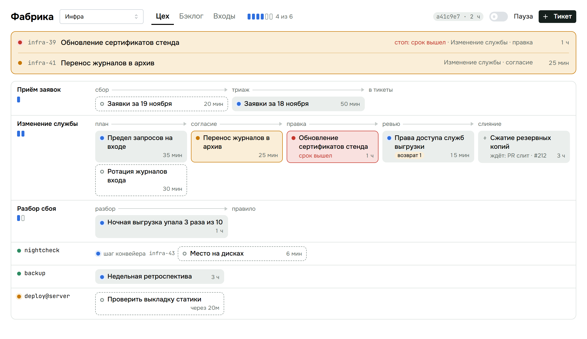
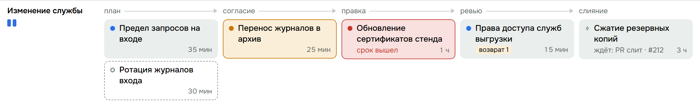
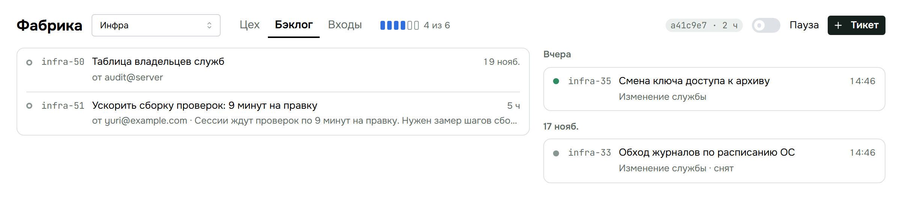
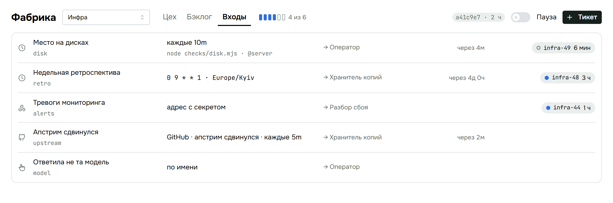
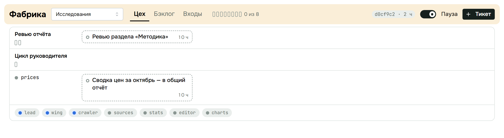
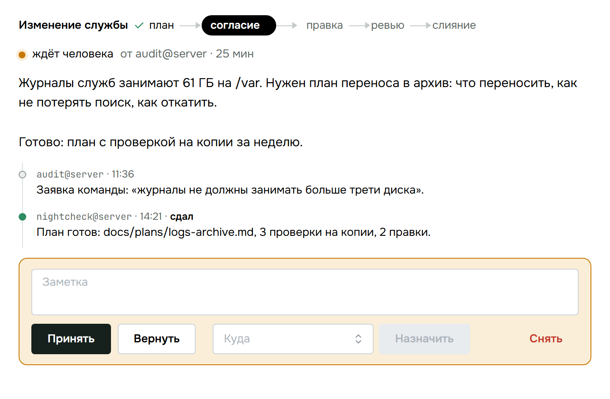
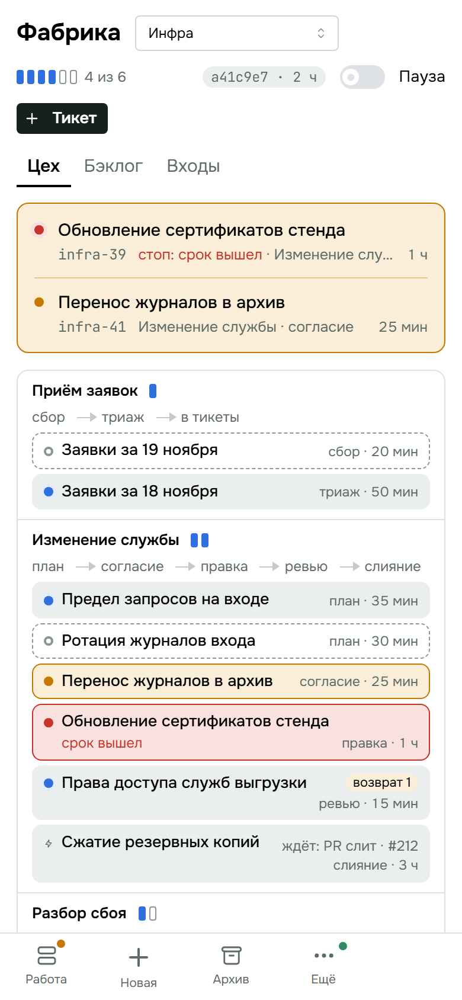
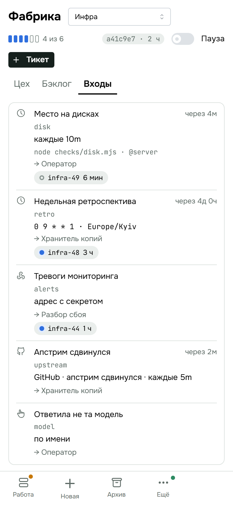
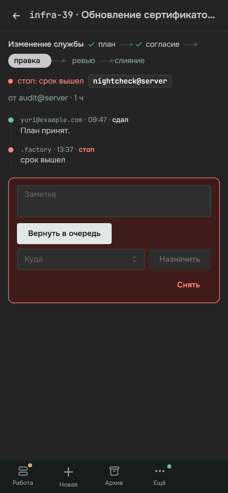
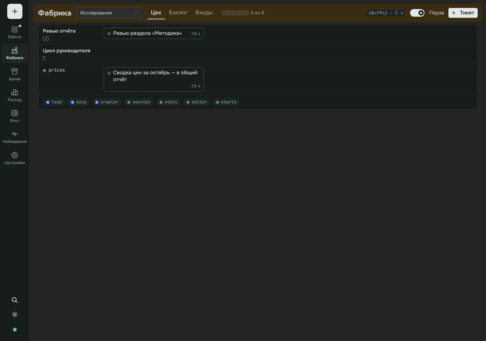

<title>Цех фабрики</title>
<meta name="claude:viewport-fit-sides" content="cover">
<link rel="stylesheet" href="https://fonts.googleapis.com/css2?family=Inter:wght@400;500;600&family=Space+Grotesk:wght@500;600&family=JetBrains+Mono:wght@400;500&display=swap">
<style>
/* раскладка: сверху цех целиком с нажимаемыми зонами и четыре числа; ниже — дорожка конвейера крупно, вкладки «Бэклог» и «Входы», путь тикета по вкладкам, редкая фабрика на паузе, тикет, телефон и тёмная тема, эталоны картинками, развилка, гейт, порядок */
:root {
  --bg: #f6f5f1; --card: #ffffff; --fg: #1c211f; --muted: #66706b; --line: #d9d8d0; --soft: #eceae3;
  --accent: #1f7a63; --accent-soft: #dcefe8; --new: #b8590f; --new-soft: #fbe9d7; --code: #f0eee7; --chg: #fff3b0;
  --busy: #2f6fde; --wait: #cf7a00; --idle: #2e8b63; --fail: #cf3a34; --wait-soft: #faeed8; --fail-soft: #f9e1df;
}
@media (prefers-color-scheme: dark) { :root:not([data-theme="light"]) {
  --bg: #151917; --card: #1d2320; --fg: #e8ece9; --muted: #98a39d; --line: #343c38; --soft: #252c28;
  --accent: #5fc3a6; --accent-soft: #1d3a31; --new: #f0a25c; --new-soft: #40291a; --code: #232a26; --chg: #4a4318;
  --busy: #6f9cf5; --wait: #f0b040; --idle: #58c493; --fail: #ef8a80; --wait-soft: #3a2c12; --fail-soft: #3f1c19; color-scheme: dark } }
:root[data-theme="dark"] {
  --bg: #151917; --card: #1d2320; --fg: #e8ece9; --muted: #98a39d; --line: #343c38; --soft: #252c28;
  --accent: #5fc3a6; --accent-soft: #1d3a31; --new: #f0a25c; --new-soft: #40291a; --code: #232a26; --chg: #4a4318;
  --busy: #6f9cf5; --wait: #f0b040; --idle: #58c493; --fail: #ef8a80; --wait-soft: #3a2c12; --fail-soft: #3f1c19; color-scheme: dark }
body { background: var(--bg); color: var(--fg); font: 15px/1.5 Inter, system-ui, sans-serif; padding-left: max(16px, env(safe-area-inset-left, 0px)); padding-right: max(16px, env(safe-area-inset-right, 0px)); padding-block: 28px 64px; }
main { max-width: 1040px; margin: 0 auto; display: flex; flex-direction: column; gap: 36px; }
h1, h2 { font-family: "Space Grotesk", Inter, sans-serif; text-wrap: balance; margin: 0; }
h1 { font-size: 34px; line-height: 1.1; }
h2 { font-size: 21px; }
.lead { color: var(--muted); max-width: 66ch; margin: 8px 0 0; }
.lead a { color: var(--accent); }
section { display: flex; flex-direction: column; gap: 14px; border-radius: 14px; }
section.read > h2::after { content: " ✓ прочитал"; font: 500 12px Inter, sans-serif; color: var(--accent); }
.card { background: var(--card); border: 1px solid var(--line); border-radius: 14px; padding: 16px; min-width: 0; }
.chg { background: var(--chg); border-radius: 4px; }
.card.chg { border-radius: 14px; }
.say { border-left: 3px solid var(--accent); background: var(--soft); border-radius: 0 10px 10px 0; padding: 10px 14px; min-height: 44px; }
.say b { font-weight: 600; }
.say pre { margin: 8px 0 0; }
pre { font: 12.5px/1.45 "JetBrains Mono", ui-monospace, monospace; background: var(--code); border-radius: 8px; padding: 10px 12px; overflow-x: auto; margin: 0; }
code { font: 12.5px "JetBrains Mono", ui-monospace, monospace; background: var(--code); border-radius: 4px; padding: 1px 5px; }

/* снимок с нажимаемыми зонами: рамки стоят по настоящей разметке экрана */
.anat { position: relative; }
.anat img { display: block; width: 100%; border-radius: 8px; border: 1px solid var(--line); }
.anat + .anat { margin-top: 14px; }
.hot { position: absolute; border: 2px solid var(--new); border-radius: 7px; background: none; padding: 0; cursor: pointer; opacity: 0.5; }
.hot:hover, .hot:focus-visible, .hot.on { opacity: 1; background: color-mix(in srgb, var(--new) 12%, transparent); outline: none; }

.grid { display: grid; grid-template-columns: repeat(auto-fit, minmax(210px, 1fr)); gap: 12px; }
.tile b { display: block; font: 600 26px "Space Grotesk", sans-serif; font-variant-numeric: tabular-nums; }
.tile span { color: var(--muted); font-size: 13px; }
.tile b .chg { color: var(--fg); }

.dia { overflow-x: auto; }
.dia svg { display: block; min-width: 760px; width: 100%; height: auto; }
.dia text { font: 500 13px Inter, sans-serif; fill: var(--fg); }
.dia text.s { font-size: 11.5px; fill: var(--muted); font-weight: 400; }
.dia text.z { font-size: 11.5px; fill: var(--muted); font-weight: 600; }
.zone { fill: none; stroke: var(--line); stroke-width: 1.5; stroke-dasharray: 3 5; }
.n rect { fill: var(--card); stroke: var(--line); stroke-width: 1.5; }
.n.call rect { fill: var(--wait-soft); stroke: var(--wait); }
.n.run rect { fill: var(--soft); stroke: var(--busy); }
.n.queue rect { stroke-dasharray: 5 4; stroke: var(--muted); }
.a path { stroke: var(--muted); stroke-width: 1.8; fill: none; }
.a path.hit { stroke: transparent; stroke-width: 18; }
.a.call path:not(.hit) { stroke: var(--wait); }
.dia .head { fill: var(--muted); }
.dia .head.call { fill: var(--wait); }
[data-i] { cursor: pointer; }
svg [data-i]:hover rect, svg [data-i].on rect { stroke-width: 2.8; }
svg [data-i]:hover path:not(.hit), svg [data-i].on path:not(.hit) { stroke-width: 3.2; }
svg [data-i]:focus-visible { outline: 2px solid var(--accent); outline-offset: 2px; }

.shots { display: grid; grid-template-columns: repeat(auto-fit, minmax(200px, 1fr)); gap: 16px; align-items: start; }
figure { margin: 0; min-width: 0; }
figure img { width: 100%; border: 1px solid var(--line); border-radius: 10px; display: block; }
figure.ph img { max-width: 300px; }
figcaption { font-size: 12.5px; color: var(--muted); margin-top: 6px; }

/* эталоны: что на входе → что на экране */
.ets { display: grid; grid-template-columns: repeat(auto-fit, minmax(300px, 1fr)); gap: 12px; }
.et { display: flex; flex-direction: column; gap: 10px; }
.et h3 { font: 600 14px Inter, sans-serif; margin: 0; }
.et .io { display: grid; grid-template-columns: minmax(0, 1fr) 20px minmax(0, 1fr); gap: 8px; align-items: center; }
.et .ar { text-align: center; color: var(--muted); }
.et small { color: var(--muted); font-size: 11.5px; }
.mini { display: flex; flex-direction: column; gap: 5px; font: 12px/1.3 "JetBrains Mono", ui-monospace, monospace; background: var(--soft); border-radius: 8px; padding: 8px; min-width: 0; }
.mini.out { background: var(--accent-soft); }
.mini .r { display: flex; align-items: center; flex-wrap: wrap; gap: 4px 6px; min-width: 0; }
.mini .r.head { font-family: Inter, sans-serif; font-weight: 600; }
.mini .r.no { color: var(--muted); text-decoration: line-through; }
.mini .r.pause { background: var(--wait-soft); border-radius: 4px; padding: 2px 4px; }
.mini .pill { display: inline-flex; align-items: center; gap: 4px; background: var(--card); border-radius: 999px; padding: 1px 7px; }
.dot { width: 8px; height: 8px; border-radius: 50%; flex: none; display: inline-block; background: var(--idle); }
.dot.busy { background: var(--busy); } .dot.wait { background: var(--wait); } .dot.fail { background: var(--fail); }
.dot.off { background: none; border: 1.5px solid var(--muted); }
.bolt { flex: none; width: 8px; text-align: center; color: var(--muted); font-size: 10px; }

.fork { display: grid; grid-template-columns: repeat(auto-fit, minmax(240px, 1fr)); gap: 12px; }
.fork .opt { border: 1.5px solid var(--line); border-radius: 12px; padding: 12px 14px; background: var(--card); min-width: 0; }
.fork .opt.rec { border-color: var(--accent); background: var(--accent-soft); }
.fork .opt b { display: block; margin-bottom: 4px; }
.fork .opt span { font-size: 13px; color: var(--muted); }
.gate { font: 12.5px/1.6 "JetBrains Mono", ui-monospace, monospace; white-space: pre-wrap; overflow-wrap: anywhere; }
ol.steps { list-style: none; counter-reset: st; margin: 0; padding: 0; display: flex; flex-direction: column; gap: 10px; }
ol.steps li { counter-increment: st; display: grid; grid-template-columns: 30px minmax(0, 1fr); gap: 4px 10px; }
ol.steps li::before { content: counter(st); grid-row: span 2; width: 28px; height: 28px; border-radius: 50%; background: var(--accent-soft); color: var(--accent); font: 600 13px "Space Grotesk", sans-serif; display: grid; place-items: center; }
ol.steps .done { font-size: 13px; color: var(--muted); }
ol.steps .done b { color: var(--accent); font-weight: 600; }
</style>

<main>
<header>
  <h1>Экран «Фабрика» заново</h1>
  <p class="lead">Три вкладки. «Цех» — работа в ходу: сверху тикеты, которые без человека не сдвинутся, ниже дорожки исполнителей. «Бэклог» — тикеты без исполнителя и закрытые по дням. «Входы» — что заводит тикеты само. В цехе место отдано тикетам: названия дорожек, станции и свободные посты стоят мелко, подписей разделов нет, подробности определения — в подсказке. Нажмите на рамку на снимке. Живой прототип на этом компьютере: <a href="http://localhost:4861/?mock#/factory/infra">плотная фабрика</a>, <a href="http://localhost:4861/?mock#/factory/research">редкая на паузе</a>.</p>
</header>

<section id="b-screen" data-block>
  <h2>Цех</h2>
  <div class="card">
    <div class="anat">
      
      <button class="hot on" data-i="call" data-z="factory.call" aria-label="Нужен человек"></button>
      <button class="hot" data-i="head" data-z="factory.head" aria-label="Шапка"></button>
      <button class="hot" data-i="tabs" data-z="factory.tabs" aria-label="Вкладки"></button>
      <button class="hot" data-i="lines" data-z="factory.lines" aria-label="Конвейеры"></button>
      <button class="hot" data-i="posts" data-z="factory.posts" aria-label="Посты"></button>
      <button class="hot" data-i="sessions" data-z="factory.sessions" aria-label="Сессия с тикетом"></button>
    </div>
  </div>
  <div class="say" aria-live="polite"><b>Нужен человек.</b> Тикеты, которые без вас не сдвинутся: шаг человека и стоп с причиной. Старые первыми. Когда таких тикетов нет, блока на экране нет.</div>
  <div class="grid">
    <div class="card tile"><b>494 → 67 px</b><span>от верха экрана до тикета, который ждёт человека</span></div>
    <div class="card tile"><b>1693 → 695 px</b><span>цех плотной фабрики: 3 конвейера, 12 тикетов в ходу — один экран</span></div>
    <div class="card tile"><b>1583 → 329 px</b><span>цех редкой фабрики: 8 постов, 2 конвейера, 2 тикета</span></div>
    <div class="card tile"><b>5 → 0</b><span>пустых коробок: «Пусто», «Вставших нет», колонки без тикетов</span></div>
  </div>
</section>

<section id="b-lane" data-block>
  <h2>Дорожка конвейера</h2>
  <div class="card">
    <div class="anat">
      
      <button class="hot on" data-i="rail" data-z="lane.rail" aria-label="Рельс со станциями"></button>
      <button class="hot" data-i="slots" data-z="lane.slots" aria-label="Потолок"></button>
      <button class="hot" data-i="work" data-z="lane.work" aria-label="Шаг идёт"></button>
      <button class="hot" data-i="ready" data-z="lane.ready" aria-label="В очереди"></button>
      <button class="hot" data-i="human" data-z="lane.human" aria-label="Ждёт человека"></button>
      <button class="hot" data-i="stop" data-z="lane.stop" aria-label="Встал"></button>
      <button class="hot" data-i="event" data-z="lane.event" aria-label="Ждёт события"></button>
    </div>
  </div>
  <div class="say" aria-live="polite"><b>Рельс.</b> Станция — шаг конвейера: только имя, мелко. Кто исполняет шаг и чем он проверяется — в подсказке. Станция с тикетами берёт ширину, пустая — только своё имя. Стрелка показывает, куда тикет идёт дальше.</div>
</section>

<section id="b-tabs" data-block>
  <h2>Вкладки «Бэклог» и «Входы»</h2>
  <div class="card">
    <div class="anat">
      
      <button class="hot on" data-i="todo" data-z="backlog.todo" aria-label="Тикеты без исполнителя"></button>
      <button class="hot" data-i="done" data-z="backlog.done" aria-label="Закрытые по дням"></button>
    </div>
    <div class="anat">
      
      <button class="hot" data-i="timed" data-z="inputs.timed" aria-label="Вход по сроку с проверкой"></button>
      <button class="hot" data-i="cron" data-z="inputs.cron" aria-label="Вход по расписанию"></button>
      <button class="hot" data-i="hook" data-z="inputs.hook" aria-label="Вход по адресу с секретом"></button>
      <button class="hot" data-i="named" data-z="inputs.named" aria-label="Вход по имени"></button>
    </div>
  </div>
  <div class="say" aria-live="polite"><b>Тикеты без исполнителя.</b> Очередь на разбор: старые первыми. Заголовок целиком, под ним — от кого тикет и начало текста. Нажатие открывает тикет: там его назначают конвейеру или посту.</div>
</section>

<section id="b-flow" data-block>
  <h2>Путь тикета по вкладкам</h2>
  <div class="card dia">
    <svg viewBox="0 0 960 336" role="img" aria-label="Путь тикета по вкладкам: вход или кнопка «Тикет» заводят тикет; без исполнителя он лежит во вкладке «Бэклог»; с исполнителем встаёт в очередь станции в цехе, шаг идёт, сдан — на следующую станцию или в закрытые на вкладке «Бэклог»; шаг человека и стоп поднимают его в первый блок цеха, откуда вердикт возвращает тикет на дорожку">
      <defs>
        <marker id="ah" viewBox="0 0 10 10" refX="9" refY="5" markerWidth="7" markerHeight="7" orient="auto-start-reverse"><path d="M0 0 10 5 0 10z" class="head"/></marker>
        <marker id="ahc" viewBox="0 0 10 10" refX="9" refY="5" markerWidth="7" markerHeight="7" orient="auto-start-reverse"><path d="M0 0 10 5 0 10z" class="head call"/></marker>
      </defs>
      <rect class="zone" x="266" y="8" width="460" height="262" rx="14"/><text class="z" x="282" y="28">вкладка «Цех»</text>
      <rect class="zone" x="6" y="232" width="190" height="96" rx="14"/><text class="z" x="18" y="320">вкладка «Бэклог»</text>
      <rect class="zone" x="766" y="122" width="190" height="96" rx="14"/><text class="z" x="778" y="210">вкладка «Бэклог»</text>
      <rect class="zone" x="6" y="8" width="190" height="96" rx="14"/><text class="z" x="18" y="96">вкладка «Входы»</text>
      <g class="n" data-i="f-rules"><rect x="16" y="18" width="170" height="54" rx="10"/><text x="101" y="41" text-anchor="middle">Вход</text><text class="s" x="101" y="60" text-anchor="middle">срок, адрес, GitHub</text></g>
      <g class="n" data-i="f-new"><rect x="16" y="132" width="170" height="58" rx="10"/><text x="101" y="157" text-anchor="middle">Кнопка «Тикет»</text><text class="s" x="101" y="176" text-anchor="middle">человек или сессия</text></g>
      <g class="n" data-i="f-backlog"><rect x="16" y="242" width="170" height="54" rx="10"/><text x="101" y="265" text-anchor="middle">Без исполнителя</text><text class="s" x="101" y="284" text-anchor="middle">старые первыми</text></g>
      <g class="n queue" data-i="f-queue"><rect x="286" y="132" width="170" height="58" rx="10"/><text x="371" y="157" text-anchor="middle">В очереди станции</text><text class="s" x="371" y="176" text-anchor="middle">плашка пунктиром</text></g>
      <g class="n run" data-i="f-run"><rect x="536" y="132" width="170" height="58" rx="10"/><text x="621" y="157" text-anchor="middle">Шаг идёт</text><text class="s" x="621" y="176" text-anchor="middle">залитая плашка</text></g>
      <g class="n" data-i="f-closed"><rect x="776" y="132" width="170" height="54" rx="10"/><text x="861" y="155" text-anchor="middle">Закрытые</text><text class="s" x="861" y="174" text-anchor="middle">по дням</text></g>
      <g class="n call" data-i="f-call"><rect x="411" y="40" width="170" height="54" rx="10"/><text x="496" y="63" text-anchor="middle">Нужен человек</text><text class="s" x="496" y="82" text-anchor="middle">первый блок цеха</text></g>

      <g class="a" data-i="fa-rule"><path d="M186 45H236V150H282" marker-end="url(#ah)"/><path class="hit" d="M186 45H236V150H282"/></g>
      <g class="a" data-i="fa-new"><path d="M186 161H282" marker-end="url(#ah)"/><path class="hit" d="M186 161H282"/><text class="s" x="234" y="179" text-anchor="middle">куда</text></g>
      <g class="a" data-i="fa-nowhere"><path d="M101 190V238" marker-end="url(#ah)"/><path class="hit" d="M101 190V238"/><text class="s" x="111" y="219">без «куда»</text></g>
      <g class="a" data-i="fa-assign"><path d="M186 269H236V172H282" marker-end="url(#ah)"/><path class="hit" d="M186 269H236V172H282"/><text class="s" x="246" y="262">назначить</text></g>
      <g class="a" data-i="fa-start"><path d="M456 161H532" marker-end="url(#ah)"/><path class="hit" d="M456 161H532"/><text class="s" x="494" y="179" text-anchor="middle">есть место</text></g>
      <g class="a" data-i="fa-next"><path d="M621 190V238H371V194" marker-end="url(#ah)"/><path class="hit" d="M621 190V238H371V194"/><text class="s" x="496" y="256" text-anchor="middle">сдал — следующая станция</text></g>
      <g class="a" data-i="fa-done"><path d="M706 161H772" marker-end="url(#ah)"/><path class="hit" d="M706 161H772"/></g>
      <g class="a call" data-i="fa-call"><path d="M621 132V67H585" marker-end="url(#ahc)"/><path class="hit" d="M621 132V67H585"/><text class="s" x="631" y="106">шаг человека · стоп</text></g>
      <g class="a call" data-i="fa-verdict"><path d="M411 67H371V128" marker-end="url(#ahc)"/><path class="hit" d="M411 67H371V128"/><text class="s" x="361" y="106" text-anchor="end">вердикт · в очередь</text></g>
    </svg>
  </div>
  <div class="say" aria-live="polite"><b>Куда смотреть.</b> Тикет с исполнителем виден в цехе, пока он в работе; до работы и после неё он лежит во вкладке «Бэклог». Наверх, в первый блок цеха, он поднимается только когда ждёт вас. Нажмите на блок или стрелку.</div>
</section>

<section id="b-sparse" data-block>
  <h2>Редкая фабрика на паузе</h2>
  <div class="card">
    <div class="anat">
      
      <button class="hot on" data-i="paused" data-z="sparse.paused" aria-label="Шапка на паузе"></button>
      <button class="hot" data-i="queue" data-z="sparse.queue" aria-label="Пост с очередью"></button>
      <button class="hot" data-i="idle" data-z="sparse.idle" aria-label="Свободные посты"></button>
    </div>
  </div>
  <div class="say" aria-live="polite"><b>Пауза.</b> Шапка жёлтая целиком на всех вкладках: новые шаги не запускаются, потолок пустой. Переключатель один, на прежнем месте.</div>
</section>

<section id="b-ticket" data-block>
  <h2>Тикет</h2>
  <div class="card">
    <div class="anat">
      
      <button class="hot on" data-i="act" data-z="ticket.act" aria-label="Действия"></button>
      <button class="hot" data-i="path" data-z="ticket.path" aria-label="Путь по станциям"></button>
      <button class="hot" data-i="state" data-z="ticket.state" aria-label="Состояние"></button>
      <button class="hot" data-i="notes" data-z="ticket.notes" aria-label="История"></button>
    </div>
  </div>
  <div class="say" aria-live="polite"><b>Действия.</b> Одна заметка и все действия в один ряд. У шага человека блок жёлтый, у вставшего тикета — красный. Какие кнопки показать, называет флот.</div>
</section>

<section id="b-phone" data-block>
  <h2>Телефон и тёмная тема</h2>
  <div class="shots">
    <figure class="ph"><figcaption>Цех: вкладки своим рядом; рельс — одной строкой имён, станция названа в плашке</figcaption></figure>
    <figure class="ph"><figcaption>«Входы»: каждый вход столбиком, срок — справа от названия</figcaption></figure>
    <figure class="ph"><figcaption>Вставший тикет: причина в строке состояния, блок действий красный</figcaption></figure>
    <figure><figcaption>Тёмная тема: те же цвета состояний, что в «Работе»</figcaption></figure>
  </div>
</section>

<section id="b-etalons" data-block>
  <h2>Эталоны</h2>
  <div class="ets">
    <div class="card et"><h3>Ждут человека — первым блоком</h3>
      <div class="io">
        <div class="mini"><span class="r"><i class="dot fail"></i>39 · стоп</span><span class="r"><i class="dot wait"></i>41 · шаг человека</span><span class="r"><span class="bolt">⚡</span>36 · ждёт PR</span><span class="r"><i class="dot busy"></i>43 · идёт</span></div>
        <div class="ar">→</div>
        <div class="mini out"><span class="r head">первый блок цеха</span><span class="r"><i class="dot fail"></i>39 · стоп: причина</span><span class="r"><i class="dot wait"></i>41</span></div>
      </div><small>чьё: договор — у проекта одно поле «кого звать, когда тикет ждёт человека или встал»</small></div>
    <div class="card et"><h3>До и после работы — на вкладке «Бэклог»</h3>
      <div class="io">
        <div class="mini"><span class="r"><i class="dot off"></i>50 · без исполнителя</span><span class="r"><i class="dot"></i>35 · закрыт вчера</span><span class="r"><i class="dot busy"></i>43 · идёт</span></div>
        <div class="ar">→</div>
        <div class="mini out"><span class="r head">Цех</span><span class="r"><i class="dot busy"></i>43</span><span class="r head">Бэклог</span><span class="r"><i class="dot off"></i>50</span><span class="r">Вчера · <i class="dot"></i>35</span></div>
      </div><small>чьё: слово пользователя 20 нояб. — входы и бэклог с закрытыми — отдельные вкладки</small></div>
    <div class="card et"><h3>Пустых разделов в цехе нет</h3>
      <div class="io">
        <div class="mini"><span class="r"><i class="dot off"></i>1 · в очереди</span><span class="r"><i class="dot off"></i>2 · в очереди</span><span class="r">вставших 0</span><span class="r">ждущих человека 0</span></div>
        <div class="ar">→</div>
        <div class="mini out"><span class="r head">цех: дорожки и посты</span><span class="r no">блок «ждут человека»</span></div>
      </div><small>чьё: правило пользователя 2 нояб. — в интерфейсе только то, что несёт информацию</small></div>
    <div class="card et"><h3>Свободные посты — одним рядом</h3>
      <div class="io">
        <div class="mini"><span class="r">8 постов</span><span class="r"><i class="dot off"></i>2 · посту prices</span><span class="r">у остальных тикетов нет</span></div>
        <div class="ar">→</div>
        <div class="mini out"><span class="r head">prices</span><span class="r"><i class="dot off"></i>2</span><span class="r"><span class="pill"><i class="dot busy"></i>lead</span><span class="pill"><i class="dot busy"></i>wing</span><span class="pill"><i class="dot off"></i>stats</span>… 7</span></div>
      </div><small>чьё: слово пользователя 20 нояб. — меньше места статичному, больше тому, на что смотрят каждый день</small></div>
    <div class="card et"><h3>Пост занят шагом конвейера</h3>
      <div class="io">
        <div class="mini"><span class="r"><i class="dot busy"></i>43 · конвейер, шаг поста</span><span class="r"><i class="dot off"></i>49 · посту, в очереди</span></div>
        <div class="ar">→</div>
        <div class="mini out"><span class="r head">nightcheck</span><span class="r"><i class="dot busy"></i>шаг конвейера 43</span><span class="r"><i class="dot off"></i>49</span></div>
      </div><small>чьё: код — пост берёт тикеты по одному и занят шагом конвейера, который ведёт его сессия</small></div>
    <div class="card et"><h3>Пауза видна шапкой</h3>
      <div class="io">
        <div class="mini"><span class="r">пауза включена</span><span class="r">вход со сроком 10m</span><span class="r">сработает через 4 м</span></div>
        <div class="ar">→</div>
        <div class="mini out"><span class="r head pause">Фабрика · Пауза</span><span class="r">«Входы»: каждые 10m</span><span class="r no">через 4 м</span></div>
      </div><small>чьё: код — на паузе входы не срабатывают и новые шаги не запускаются</small></div>
    <div class="card et"><h3>«Принять» двигает на следующую станцию</h3>
      <div class="io">
        <div class="mini"><span class="r"><i class="dot wait"></i>41 · согласие</span><span class="r">нажато «Принять»</span><span class="r">потолок 2 из 2</span></div>
        <div class="ar">→</div>
        <div class="mini out"><span class="r head">правка</span><span class="r"><i class="dot off"></i>41 · в очереди</span></div>
      </div><small>чьё: код — уже закреплено тестом экрана; остаётся как есть</small></div>
  </div>
</section>

<section id="b-forks" data-block>
  <h2>Развилка</h2>
  <div class="fork">
    <div class="opt rec"><b>Тикет открывается страницей — рекомендую</b><span>Как сейчас и как все формы приложения: стрелка «Назад» возвращает на ту же вкладку. На телефоне то же самое. Не скажете иначе — так.</span></div>
    <div class="opt"><b>Тикет открывается панелью справа</b><span>Цех остаётся виден рядом, следующий тикет — одним нажатием. Станциям остаётся на треть меньше ширины; на телефоне всё равно страница.</span></div>
  </div>
</section>

<section id="b-gate" data-block>
  <h2>Гейт</h2>
  <div class="card gate">Гейт: дубликаты ответственности 0 → 0 · состояния 0 → 0 · логики 0 → 0 · смысла 1 → 0 · других 1 → 0 · лишние коммуникации 0 → 0 · циклы 0 → 0
Числа: запросы экрана 6 → 6 · кадры, поля договора, модули, каналы, секреты, настройки — без изменений · виды контейнера на экране 3 → 2 · пустые коробки 5 → 0 · подписи разделов 5 → 0 · вкладки 0 → 3 · эталоны экрана 6 → 12
Работа: маленькая — внутри веб-приложения, договор с флотом тот же
Сделано:
  1. Дубликат смысла · пост, конвейер и сессия с тикетом рисовались разными видами, хотя все — исполнитель тикета · одна дорожка: у конвейера станций несколько, у поста и сессии одна · выигрыш: видов контейнера 3 → 2 (дорожка и список)
  2. Второй механизм · вставший тикет имел свой список внизу, ждущий человека — только плашку в колонке · один блок сверху по одному правилу · выигрыш: мест, где искать «что ждёт меня», 2 → 1; до первого такого тикета 494 → 67 px
  3. Удаление раньше добавления · карточки «Пусто» и «Вставших нет», серые колонки шагов без тикетов, позывной свежей сессии на плашке · убраны · выигрыш: пустых коробок 5 → 0
  4. Слово пользователя 20 нояб. · статичное занимало больше места, чем тикеты · название дорожки и потолок — узкой колонкой; станция — одно имя, исполнитель и проверка в подсказке; пустая станция — шириной в своё имя; свободные посты — рядом меток; подписей разделов нет; номер тикета на плашке — в подсказке
  5. Слово пользователя 20 нояб. · входы и бэклог с закрытыми — отдельные вкладки · цех показывает только работу в ходу; «Бэклог» — тикеты без исполнителя с началом текста и закрытые по дням; «Входы» — всё определение входа на виду и тикет, который он держит открытым; тикет сессии по позывному — дорожка этой сессии в цехе · выигрыш: высота цеха плотной фабрики 1693 → 695 px, редкой 1583 → 329 px, на телефоне 2885 → 1128 px
  6. Явное · пауза была положением переключателя · шапка на паузе жёлтая, сроки входов не показываются · выигрыш: состояние фабрики видно с любой вкладки
  7. Явное · пост, занятый шагом конвейера, выглядел свободным с тикетом в очереди · у поста стоит указатель на этот шаг · выигрыш: причина очереди видна
  8. Юнификация · новый визуальный язык не вводится: лампы, цвета состояний, чипы и вкладки — те же, что в «Работе» и «Флоте» · новых цветов 0, новых шрифтов 0
  9. YAGNI · перетаскивание плашек, фильтры и поиск по тикетам, панель тикета рядом с цехом, назначение прямо из строки бэклога · не делаются
Развилки пользователю:
  1. Как открывается тикет · рекомендую: страницей, как сейчас · иначе: панелью справа от цеха · не скажете иначе — страницей
Не трогал как редакторское: слова кнопок «Вернуть в очередь» и «Снять», подписи формы нового тикета</div>
</section>

<section id="b-order" data-block>
  <h2>Порядок реализации</h2>
  <ol class="steps">
    <li><div>Экран с тремя вкладками, слова и стили — из прототипа; подделка флота держит две фабрики: плотную и редкую на паузе; шесть новых эталонов этой страницы — тестами экрана.</div>
      <div class="done"><b>Готово:</b> <code>node tools/test/run.mjs web</code> зелёный; тестов экрана «Фабрика» 6 → 12.</div></li>
    <li><div>Замер цеха на подделке флота: тикет, который ждёт человека, виден без прокрутки; пустых коробок нет.</div>
      <div class="done"><b>Готово:</b> <code>node docs/designs/factory-ui/measure.mjs</code> — до тикета, который ждёт человека, 67 px на 1280 (было 494) и 174 px на телефоне (было 1044); высота цеха плотной фабрики 695 px (было 1693); пустых коробок 0 (было 5).</div></li>
    <li><div>Снимки изменённых экранов настоящего кода: 1280 и 390, светлая и тёмная тема.</div>
      <div class="done"><b>Готово:</b> <code>node docs/designs/factory-ui/shots.mjs</code> — снимков 38, проблем 0: ошибок страницы и прокрутки вбок нет; жестов мышью и пальцем 12 из 12.</div></li>
    <li><div>Слияние в основную ветку; на тестовый флот выкладывает CI; на прод — по вашему слову.</div>
      <div class="done"><b>Готово:</b> CI зелёный; живая проверка страниц тестового флота проходит раздел «Фабрика» без полосы отказа — 1 из 1.</div></li>
  </ol>
</section>
</main>

<script type="application/json" id="zones">{"factory":{"head":{"left":0.8,"top":1.4,"width":98.3,"height":6.9},"tabs":{"left":25.8,"top":2.6,"width":15,"height":4.6},"call":{"left":1.8,"top":9.2,"width":96.3,"height":12.7},"lines":{"left":1.9,"top":24.1,"width":96.2,"height":47.3},"posts":{"left":1.9,"top":71.3,"width":96.2,"height":13.6},"sessions":{"left":1.9,"top":84.9,"width":96.2,"height":9.2}},"lane":{"slots":{"left":1,"top":18.4,"width":1.3,"height":6.9},"rail":{"left":14.9,"top":5.2,"width":84.1,"height":10.7},"work":{"left":14.9,"top":18.2,"width":16.3,"height":37.4},"ready":{"left":14.9,"top":58,"width":16.3,"height":37.4},"human":{"left":31.8,"top":18.2,"width":16.3,"height":37.4},"stop":{"left":48.8,"top":18.2,"width":16.3,"height":38},"event":{"left":82.7,"top":18.2,"width":16.3,"height":38}},"sparse":{"paused":{"left":0.8,"top":3,"width":98.3,"height":14.7},"idle":{"left":1.9,"top":76,"width":96.2,"height":11.6},"queue":{"left":1.9,"top":51.1,"width":96.2,"height":24.9}},"backlog":{"todo":{"left":1.8,"top":22.5,"width":56.9,"height":41.2},"done":{"left":60.2,"top":22.5,"width":37.9,"height":63.5}},"inputs":{"timed":{"left":2.9,"top":16.4,"width":94.2,"height":14.5},"cron":{"left":2.9,"top":30.8,"width":94.2,"height":14.7},"hook":{"left":2.9,"top":45.6,"width":94.2,"height":14.7},"named":{"left":2.9,"top":75,"width":94.2,"height":14.7}},"ticket":{"path":{"left":3.1,"top":3.8,"width":93.9,"height":5.1},"state":{"left":3.1,"top":11.5,"width":93.9,"height":4.4},"notes":{"left":3.6,"top":40.7,"width":93.3,"height":21.3},"act":{"left":3.1,"top":64.6,"width":93.9,"height":26.9}}}</script>
<script>
// рамки на снимках: места частей сняты с настоящей разметки экрана вместе со снимками
(() => {
  const zones = JSON.parse(document.getElementById("zones").textContent);
  for (const el of document.querySelectorAll(".hot[data-z]")) {
    const [shot, part] = el.dataset.z.split(".");
    const z = zones[shot]?.[part];
    if (!z) { el.hidden = true; continue; }
    Object.assign(el.style, { left: z.left + "%", top: z.top + "%", width: z.width + "%", height: z.height + "%" });
  }
})();
</script>
<script>
// пояснения частей: нажатие на рамку снимка, блок или стрелку диаграммы
(() => {
  const J = (o) => "<pre>" + JSON.stringify(o, null, 2).replace(/</g, "&lt;") + "</pre>";
  const SAY = {
    call: ["Нужен человек.", "Тикеты, которые без вас не сдвинутся: шаг человека и стоп с причиной. Старые первыми. Когда таких тикетов нет, блока на экране нет. " + "Подписи у блока нет: жёлтая рамка сверху — и есть «ждут вас»."],
    head: ["Шапка.", "Проект, потолок проекта делениями — идёт 4 шага из 6, — определение, пауза и новый тикет. На паузе шапка жёлтая."],
    tabs: ["Вкладки.", "«Цех» — работа в ходу, «Бэклог» — тикеты до и после работы, «Входы» — что заводит тикеты само. Чисел во вкладках нет. У каждой вкладки свой адрес; «Назад» из тикета возвращает на ту, с которой ушли."],
    lines: ["Конвейеры.", "Слева узкой колонкой название и потолок делениями; машины — в подсказке. Справа рельс: имена станций мелко, под ними плашки тикетов — они и занимают место."],
    posts: ["Посты.", "Пост с работой — дорожка: лампа сессии, имя, тикет, который идёт, и очередь. Свободные посты дорожек не занимают: они стоят одним рядом меток. Нажатие на имя открывает разговор сессии; название поста — в подсказке."],
    sessions: ["Сессия с тикетом.", "Тикет, отданный сессии по позывному, — тоже работа в ходу: у сессии такая же дорожка, как у поста, пока тикет открыт. Отложенный тикет ждёт пунктиром со сроком."],
    todo: ["Тикеты без исполнителя.", "Очередь на разбор: старые первыми. Заголовок целиком, под ним — от кого тикет и начало текста. Нажатие открывает тикет: там его назначают конвейеру или посту."],
    done: ["Закрытые.", "Что фабрика сделала: по дням, свежие выше. Под заголовком — где тикет шёл; у снятого без работы — серая лампа и слово «снят». Справа — время закрытия."],
    timed: ["Вход по сроку с проверкой.", "Название и имя, которым вход зовут сессии. «Каждые 10m» и команда проверки с машиной: тикет заводит только находка. Стрелка — кому идёт тикет. Справа — через сколько сработает и тикет, который вход держит открытым: следующая находка допишется в него."],
    cron: ["Вход по расписанию.", "Строка расписания и часовой пояс. Без проверки тикет заводится каждый срок."],
    hook: ["Вход по адресу с секретом.", "Событие снаружи приходит на адрес и идёт тикетом исполнителю. Срока нет — справа только открытый тикет."],
    named: ["Вход по имени.", "Его зовут сессии или сама машина — например, когда ответила не та модель. Сам он не срабатывает."],
    rail: ["Рельс.", "Станция — шаг конвейера: только имя, мелко. Кто исполняет шаг и чем он проверяется — в подсказке. Станция с тикетами берёт ширину, пустая — только своё имя." + " Стрелка показывает, куда тикет идёт дальше."],
    slots: ["Потолок.", "Деление — место под шаг; залитое — шаг идёт. Здесь два из двух: новый тикет встанет в очередь. " + "Числа рядом нет, пока делений не больше четырёх."],
    work: ["Шаг идёт.", "Залитая плашка с синей лампой. " + "Заголовок целиком и сколько тикет стоит на станции; номер тикета — в подсказке и на его странице."],
    ready: ["В очереди.", "Пунктир: тикет ждёт места под потолком."],
    human: ["Ждёт человека.", "Жёлтая плашка. Тот же тикет стоит первым блоком цеха."],
    stop: ["Встал.", "Красная плашка с причиной. Дальше — только человек: вернуть в очередь, назначить другому или снять."],
    event: ["Ждёт события.", "Тихая плашка со значком молнии: слияния PR ждёт сама фабрика, человеку делать нечего. В первый блок цеха она не попадает."],
    paused: ["Пауза.", "Шапка жёлтая целиком на всех вкладках: новые шаги не запускаются, потолок пустой. Переключатель один, на прежнем месте."],
    queue: ["Пост с очередью.", "Дорожка есть только у поста с работой. На паузе плашка ждёт пунктиром."],
    idle: ["Свободные посты.", "Семь постов без тикетов — один ряд меток с лампами сессий вместо семи пустых карточек."],
    act: ["Действия.", "Одна заметка и все действия в один ряд. У шага человека блок жёлтый, у вставшего тикета — красный. Какие кнопки показать, называет флот."],
    path: ["Путь.", "Те же станции, что на рельсе: пройденные — с галочкой, нынешняя — тёмная."],
    state: ["Состояние.", "Чего ждёт тикет, срок шага и кто его создал. У шага, который идёт, — кнопка разговора сессии."],
    notes: ["История.", "Заметки и вердикты по порядку: зелёная точка — сдал, жёлтая — вернул, красная — стоп."],
    "f-rules": ["Вход.", "Правило проекта заводит тикет само: по сроку, по событию снаружи или по событию GitHub. Исполнитель записан в правиле. Все входы — на своей вкладке."],
    "f-new": ["Кнопка «Тикет».", "Человек пишет заголовок, текст и выбирает «Куда»: конвейер, пост или бэклог. Экран возвращается туда, где тикет виден: в цех или во вкладку «Бэклог»."],
    "f-backlog": ["Без исполнителя.", "Левая колонка вкладки «Бэклог»: тикеты ждут, пока их назначат."],
    "f-queue": ["В очереди станции.", "Тикет стоит под своей станцией пунктирной плашкой, пока под потолком нет места."],
    "f-run": ["Шаг идёт.", "Сессия ведёт шаг. Плашка залита, лампа синяя, справа — сколько тикет стоит на станции."],
    "f-closed": ["Закрытые.", "Сданный на последней станции или снятый тикет уходит из цеха в правую колонку вкладки «Бэклог», под заголовок своего дня."],
    "f-call": ["Нужен человек.", "Первый блок цеха. Сюда попадают шаг человека и стоп — и больше ничего."],
    "fa-rule": ["Вход сработал.", "Тикет сразу встаёт на дорожку своего исполнителя. На паузе входы молчат."],
    "fa-new": ["Новый тикет с исполнителем.", "Запрос к флоту — тот же, что был." + J({ type: "ticket.new", project: "infra", title: "Сверить права архива", text: "Готово: список расхождений.", to: "change" })],
    "fa-nowhere": ["Новый тикет без «куда».", "Ложится в бэклог и ждёт, пока его назначат."],
    "fa-assign": ["Назначить.", "На странице тикета: «Куда» и кнопка «Назначить»." + J({ type: "ticket.set", ticket: "infra-50", to: "change" })],
    "fa-start": ["Есть место.", "Потолок конвейера не занят, паузы нет — шаг запускается сам. Экран этого не решает: загрузку называет флот."],
    "fa-next": ["Сдал.", "Сессия или человек сдаёт шаг — тикет переходит под следующую станцию рельса."],
    "fa-done": ["Последняя станция.", "Сдан последний шаг — тикет закрыт и уходит из цеха."],
    "fa-call": ["Шаг человека или стоп.", "Станция человека, вышедший срок, второй возврат — тикет поднимается в первый блок цеха и остаётся на своей станции жёлтой или красной плашкой."],
    "fa-verdict": ["Вердикт человека.", "«Принять» и «Вернуть» — у шага человека; «Вернуть в очередь» — у вставшего." + J({ type: "ticket.set", ticket: "infra-41", verdict: "done", note: "План принят." })],
  };
  const show = (el) => {
    const sec = el.closest("section");
    const [title, body] = SAY[el.dataset.i];
    for (const x of sec.querySelectorAll("[data-i].on")) x.classList.remove("on");
    el.classList.add("on");
    sec.querySelector(".say").innerHTML = "<b>" + title + "</b> " + body;
  };
  for (const el of document.querySelectorAll("[data-i]")) {
    el.addEventListener("click", () => show(el));
    if (el.tagName !== "BUTTON") { el.setAttribute("tabindex", "0"); el.setAttribute("role", "button"); el.addEventListener("keydown", (e) => e.key === "Enter" && show(el)); }
  }
})();
</script>
<script>
// метки «прочитал»: клавиша A (латинская или русская) над блоком
(() => {
  const KEY = "factory-ui.read";
  let read = [];
  try { read = JSON.parse(localStorage.getItem(KEY) ?? "[]"); } catch {}
  let over = null;
  const draw = () => { for (const s of document.querySelectorAll("[data-block]")) s.classList.toggle("read", read.includes(s.id)); };
  for (const s of document.querySelectorAll("[data-block]")) s.addEventListener("mouseenter", () => (over = s));
  document.addEventListener("keydown", (e) => {
    if (!(e.code === "KeyA" || e.key === "a" || e.key === "A" || e.key === "ф" || e.key === "Ф") || e.ctrlKey || e.metaKey || e.altKey || !over) return;
    read = read.includes(over.id) ? read.filter((x) => x !== over.id) : [...read, over.id];
    try { localStorage.setItem(KEY, JSON.stringify(read)); } catch {}
    draw();
  });
  draw();
})();
</script>
